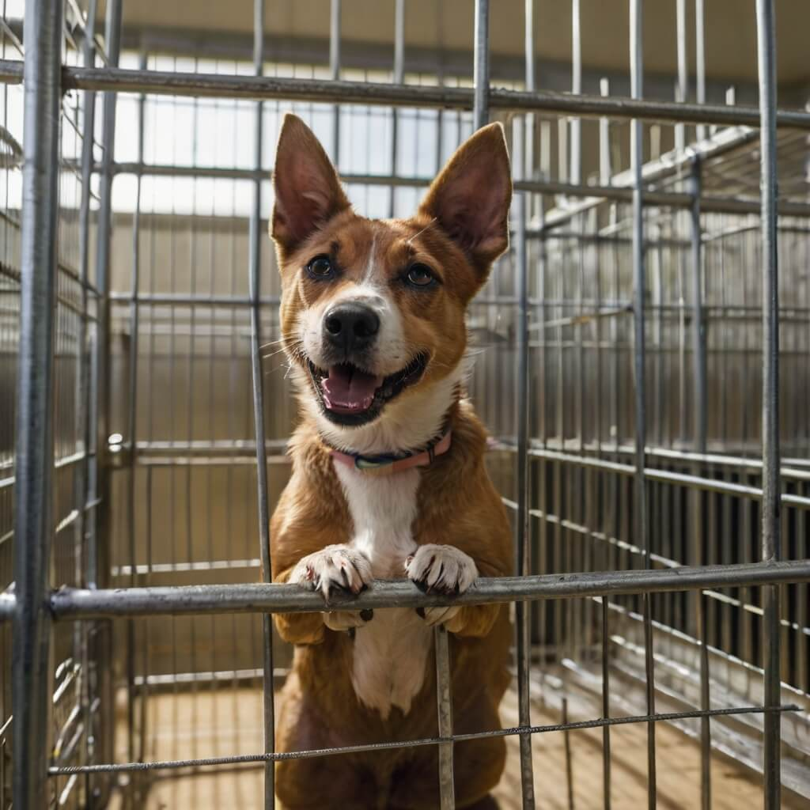
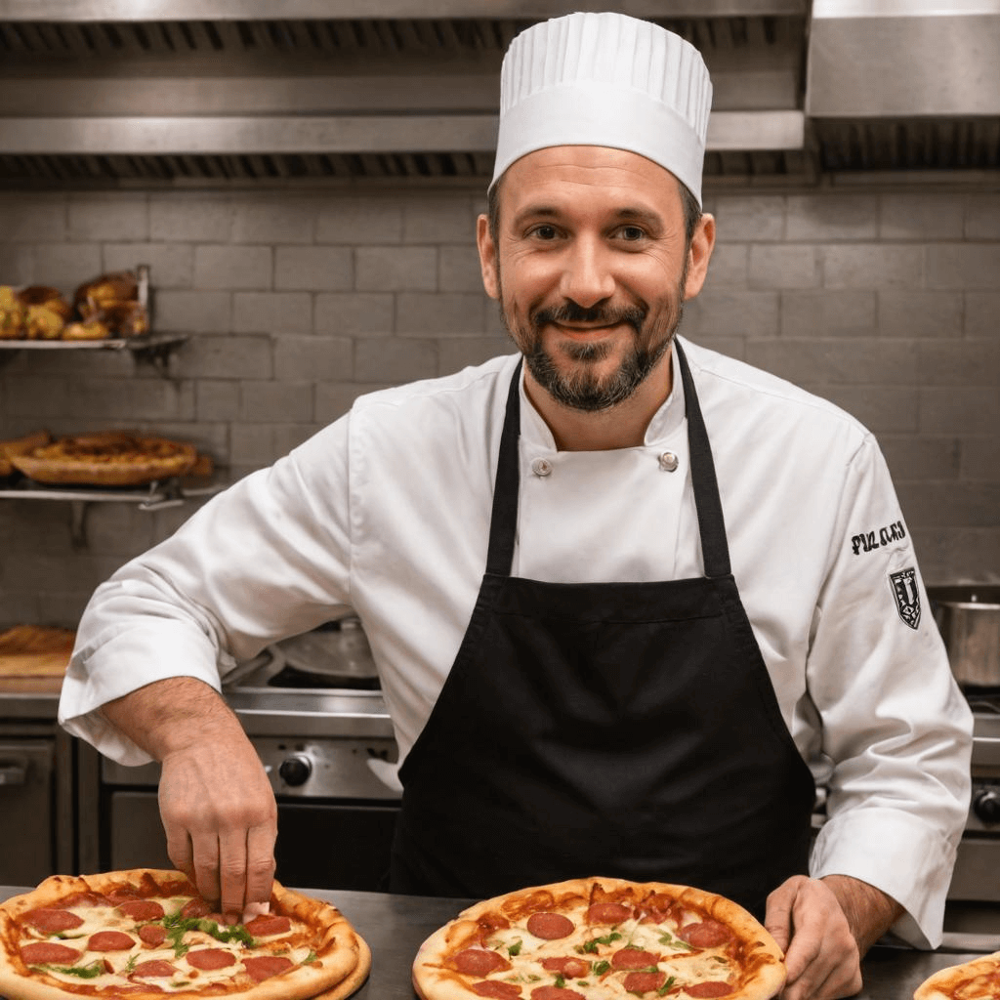
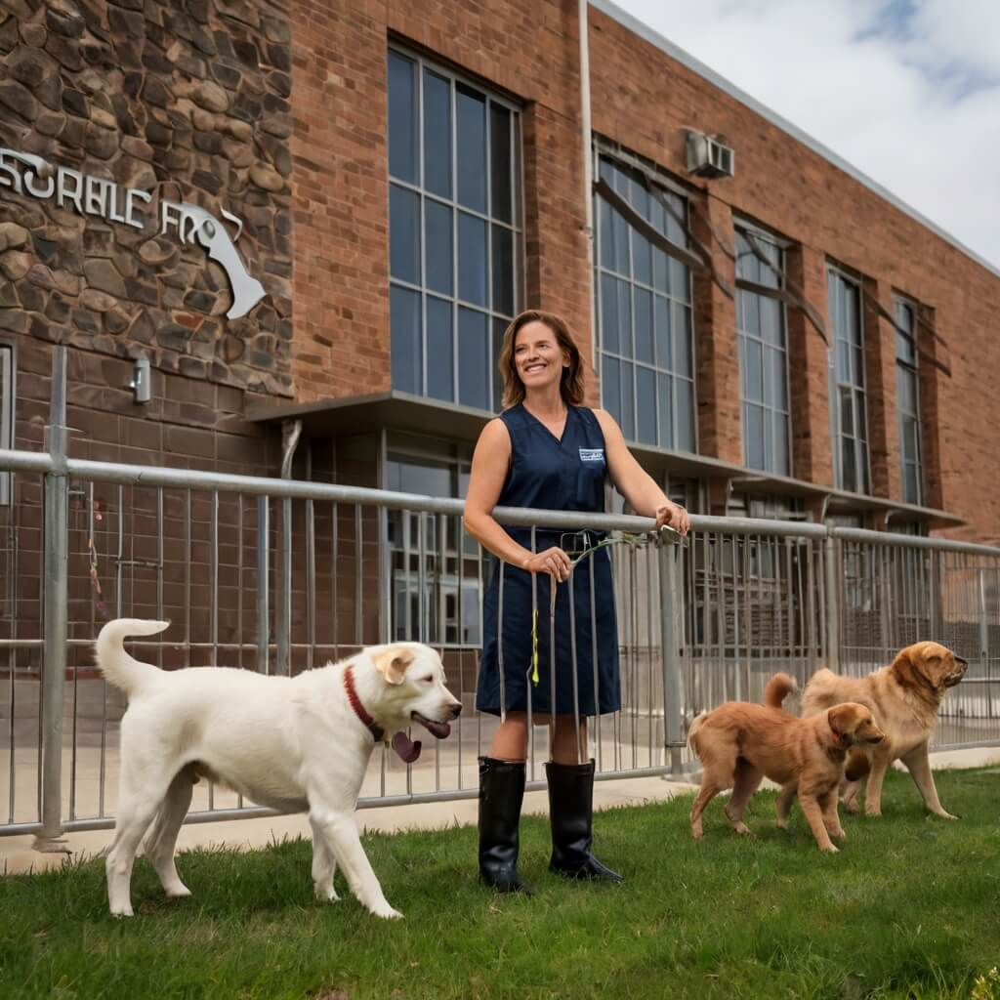

How We Help Animals Thrive
At WildEmbrace, our services are designed to give every animal the care, support, and future they deserve. From the moment an animal is rescued, we ensure they receive immediate medical attention, nourishment, and a safe place to heal. Many of the animals we take in have endured neglect, abandonment, or abuse, and our dedicated team works tirelessly to rebuild their trust and confidence.
Our rescue operations extend beyond just providing shelter. We offer comprehensive veterinary care, including vaccinations, spaying and neutering, and treatment for illnesses or injuries. Our behavioral specialists assess each animal’s needs, providing training and socialization to help them adjust to a loving home environment. No matter how long it takes, we are committed to every animal’s well-being.
Adoption is the heart of our mission. We carefully match each pet with the perfect family, ensuring a lifelong bond filled with love and happiness. Our adoption process includes thorough screening, guidance, and post-adoption support to help both pets and their new owners transition smoothly. We believe that every adoption is not just about finding a home—it’s about creating a new beginning.
Beyond rescue and adoption, we actively engage in community outreach and education. We host workshops, school programs, and events to raise awareness about responsible pet ownership, animal welfare, and the importance of spaying and neutering. By educating the public, we work toward a future where fewer animals are abandoned and more are given the love they deserve.
Our commitment doesn’t end when an animal leaves our shelter. We offer resources, guidance, and a support network for adopters, ensuring that every rescued pet has the best possible chance at a happy and fulfilling life. Through rescue, rehabilitation, adoption, and education, we strive to make a lasting impact—one animal at a time.
The Heart of WildEmbrace

Sarah Miller
Founder and visionary, Sarah has led WildEmbrace with unwavering dedication for over a decade.
Dr. Raj Patel
Our head veterinarian ensures every animal receives top-notch medical care and love.
Emma Lopez
Adoption coordinator who matches pets with families, creating bonds that last a lifetime.

What We Stand For
At WildEmbrace, our values guide every decision—from rescuing animals in need to ensuring they thrive in loving homes. We believe that every animal, regardless of its past, deserves a future filled with kindness, care, and respect. Our work goes beyond just sheltering animals; we focus on rehabilitation, socialization, and ensuring each pet is ready to become a cherished family member.
We’re driven by a commitment to compassion, responsibility, and community, making a lasting impact one pet at a time. Compassion is at the heart of everything we do, as we strive to heal both physical wounds and emotional scars. Responsibility means providing the best medical care, proper nutrition, and training for every rescued animal. Community is our foundation—through the dedication of volunteers, adopters, and supporters, we create a network of love and care that extends far beyond our shelter walls.
Our mission isn’t just about saving animals today; it’s about shaping a future where animal welfare is a priority for all. Through education, advocacy, and hands-on rescue work, we inspire others to become part of the solution. Together, we can build a world where no animal suffers, every pet has a home, and kindness leads the way.